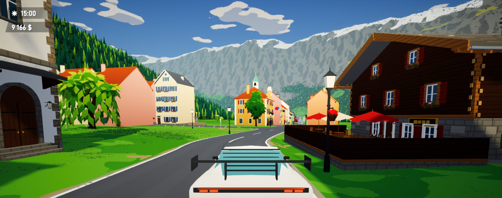

Balade alpine · Monde ouvert
CHILL ROAD
Une vallée alpine, un col, des lacets : roule à ton rythme.
Un jeu de conduite low-poly en monde ouvert : choisis ta voiture et pars explorer une vallée alpine, seul ou entre amis.
55 kmde routes
14voitures
24 hjour, nuit, orages
En lignecourses entre amis
La vallée et le jeu
Images
Villages, cols, autoroute, lac et station de ski, au soleil ou sous l’orage, et les menus qui règlent tout depuis la route.
Télécharger
Gratuit, pour Windows
Décompresse le zip et lance Chill Road.exe. Si Windows bloque le lancement : Informations complémentaires → Exécuter quand même.